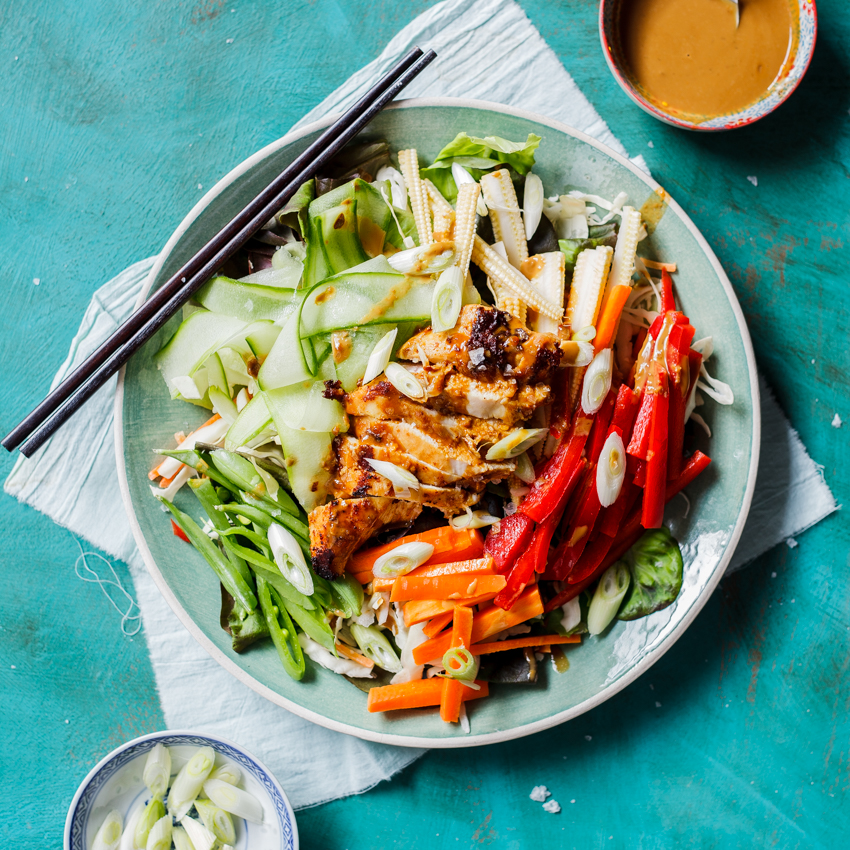

Eggs Benedict

Description
High protein dish. Marinated chicken breast with satay sauce.
Ingredients
For the salad
- 1 table spoon tamari
- 1 tablespoon curry powder
- 1 spoon cinnamon
- 1 garlic clove
- 1 spoon honey
- 2 skinless chicken breast fillets
- 1 tablespoon sweet chill sauce
- 1 tablespoon lime juice
- 1 cucumber
- seeds
Steps
Salad
- Pour the tamari into a large dish and stir in the curry powder, garlic and honey. Mix well
- Slice the chicken breasts and mit them in the sauce make sure to coat them.
- Mix chill sauce, lime juice, and 1 spoon of water
- Cook the chicken in a large pan with olive oil for 5 minutes, set aside covered
- While the chicken rests toss the lettuce and the cucumbers and seeds onto a plate, spoon over a little sauce. SLice the chicken on top of the salad and spoon over the remaining sauce